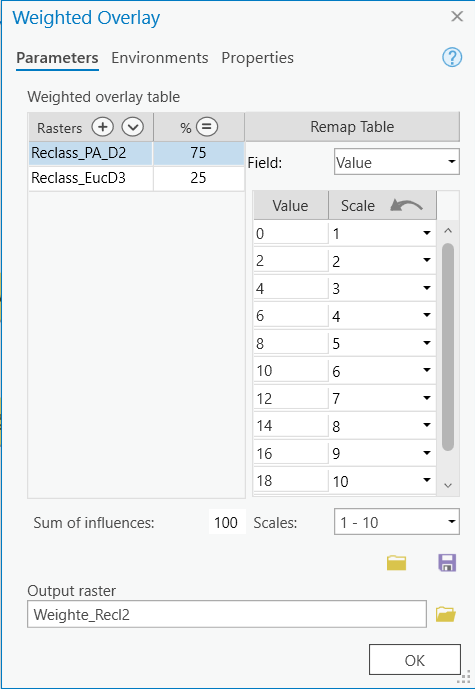
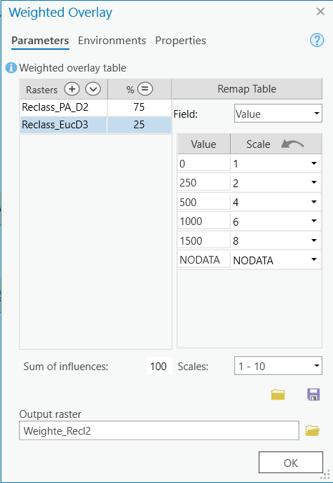

Port Alberin Tsunami Risk Assessment v 2.0
Please note: The Lab Questions corresponds to this lab assignment. There are questions you need to answer in the quiz that pertain to the lab, so its a good idea to skim the quiz questions before starting the lab.
This page contains instructions for the lab assignment, follow them to work through the lab in ArcGIS Pro. There are links to documentation where applicable along with embedded screenshots and videos in the instructions at some steps for reference. Feel free to work with peers in your lab section and don’t hesitate to ask your TA for help!
Warning: The ArcGIS Pro software package is updated frequently. The exact name/position of tools may diverge slightly from what you see in the screenshots or videos. Don’t worry recreating what you see in the videos exactly - just use them as a guide to help you work through things.
Redoing the Risk Assessment
Your task for this module is to re-do some aspects of the Port Alberni Tsunami Risk Assessment using the weighted overlay tool. Specifically, we want to create a more accurate inundation zone that will allow for a more nuanced look at which areas might flood in the event of a Tsunami.
Use the Euclidean Distance tool to approximate distance from the waterbodies layer
Reclassify the distance and elevation rasters so they are binned in discrete intervals
Use the Weighted Overlay tool to create a more accurate Inundation Zone
Map areas in Port Alberni that could flood in the event of a Tsunami
Getting Started
Create a new project called PA_RiskAssessment_Update. You should complete these general steps. Refer to the short video at the bottom of the page for reference.
- Import the PA_DEM_ProjectRaster from your Module 5 project (PA_RiskAssessment).
- Note the video below referrers to the original PA_RiskAssessment as Module 4, because I changed the ordering of modules after the video was recorded.
- Aside from the naming conventions, everything else in the video is correct.
Create a new Feature Dataset called Inputs and import the waterbodies layer.
Set your basemap to the Hybrid Satellite layer.
Euclidean Distance
Create a model and calculate distance from the water. You should complete these general steps. Refer to the short video at the bottom of the page for reference.
Create a new model.
Use the Euclidean Distance tool to create a raster layer of distance from the waterbodies layer.
Make sure to set the extent equal to the PA_DEM_ProjectRaster.
Reclassify
Reclassify distance and elevation. You should complete these general steps. Make sure the “Scales” dropdown is set to 1-10. Refer to the short video at the bottom of the page for reference.
- Reclassify the Euclidean Distance layer following the table below.
| Start | End | New |
|---|---|---|
| 0 | 250 | 0 |
| 250 | 500 | 250 |
| 500 | 1000 | 500 |
| 1000 | 1500 | 1000 |
| 1500 | 2000 | 1500 |
| 2000 | 50000 | NODATA |
- Reclassify the PA_DEM_ProjectRaster following the table below.
| Start | End | New |
|---|---|---|
| 0 | 2 | 0 |
| 2 | 4 | 2 |
| 4 | 6 | 4 |
| 6 | 8 | 6 |
| 8 | 10 | 8 |
| 10 | 12 | 10 |
| 12 | 14 | 12 |
| 14 | 16 | 14 |
| 16 | 18 | 16 |
| 18 | 20 | 18 |
| 20 | 10000 | NODATA |
- Inspect the outputs to make sure they are correct.
Weighted Overlay
Use the weighted overlay tool to create an Inundation Risk layer. You should complete these general steps. Refer to the short video at the bottom of the page for reference.
Add the weighted overlay tool to the model and set the reclassified layers as the inputs.
Set the weights for the Elevation Layer layer following the image below. Elevation should have a weight of 75%.
- The scale should increase sequentially (i.e., 1, 2, 3 … 10) for the field values.
- We are doing this because the spacing used in the reclassify step was 2m for each class.

- Set the weights for the Distance following the image below. Distance should have a weight of 25%.
- The scale is not increasing sequentially for the field values.
- We are doing this because the spacing used in the reclassify step was not consistent for each class.

- Inspect the output to make sure it makes sense.
Final Analysis
Risk level of shelter locations
Import the shelters layer from the original PA_RiskAssessment (Module 5). Using either visual inspection, or the “Zonal Statistics as Table” tool, determine the risk classification for each of the 3 tsunami shelters in Port Alberni.
- Hint - The easiest way is to import it to your Inputs Feature Dataset using the “import feature class” tool.
- If using the zonal statistics tool, make sure to use the shelters as the feature zone data and to set “Name” as the zone field.
- Take note of the risk class (or lack thereof) for each shelter. This is a quiz answer.
Your model
Export your model as a .pdf and submit it on canvas.
Final Map
Create map showing the Tsunami Inundation risk classification for Port Alberni and the location of the tsunami evacuation shelters and submit it on canvas as well. The final map should include:
- The inundation zone you created using the weighted overlay method.
- Make sure to use an appropriate color scheme.
The three tsunami shelters
The satellite base map
All relevant map elements.
- You can list google earth engine as the DEM data source and the City of Port Alberni as the “Waterbodies” data source.